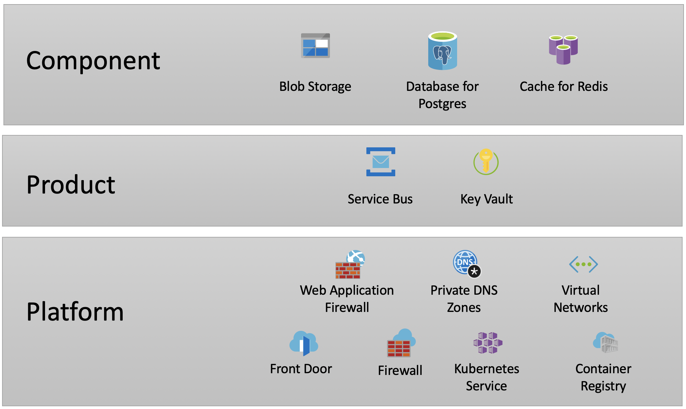

Infrastructure as Code
We prefer Software as a Service (SaaS) over Platform as a Service (PaaS) over Infrastructure as a Service (IaaS).
With this in mind, “infrastructure as code” refers to:
- Configuration for SaaS offerings.
- Provisioning and configuration of PaaS offerings.
- Provisioning and configuration of IaaS devices.
All our infrastructure is public cloud-based. We use Terraform to manage infrastructure as code.
Service and common component teams are responsible for defining their own infrastructure for their products and components.
All configuration code is managed under source control in GitHub and should be public as described in the GDS Service Manual.
Sensitive information such as passwords and key pairs should neither be managed by Terraform nor present in GitHub and instead retrieved from a Key Vault. See secrets management for more information.
The infrastructure code will be used to provision and configure one set of infrastructure in each environment.
Infrastructure levels
Infrastructure is layered into the following levels:
- Platform
- Product
- Component
Each level builds on lower levels so, the platform-level infrastructure must be provisioned before the product-level infrastructure, which in turn must be provisioned before the component-level infrastructure.
In each environment, there will be exactly one set of all platform-level infrastructure and exactly one set of each of the product and component-level infrastructure configurations.
Taken together, these infrastructure levels fully constitute an application.
The following diagram shows the layers and the types of infrastructure that might be found in a given environment.

Platform-level infrastructure
This is the base-level infrastructure you can expect to find in each environment. It’s managed by the Platform Operations team. Service and common component teams can assume that this infrastructure already exists in every environment.
The code is managed in various repositories in GitHub. For some configuration, service and common component teams may need to update these repositories with their specific values. These updates should be requested in the form of GitHub Pull Requests which can then be reviewed and approved appropriately. Examples of this can be found in the path-to-live documentation.
Product- and component-level infrastructure
These levels of infrastructure are provisioned by service and common component teams. It is often called “shared infrastructure” and that is the naming convention that has been adopted for repositories.
There are no hard rules around what infrastructure belongs in product-level or component-level but, in general, if something can be shared between components within a product then it should belong in the product-level infrastructure. The diagram above shows the types of things that might exist in each level.
Product-level (shared) infrastructure
This is infrastructure provisioned by the product team and is shared between all components within the product.
The infrastructure code must be managed in a GitHub repository. The repository should be named {product}-shared-infrastructure.
Terraform .tf files must be placed in the root of the repository.
The common build pipeline must be used to build the infrastructure.
Component-level infrastructure
This is infrastructure provisioned by the product team and is specific to a single component within the product.
The infrastructure code must be managed in the component GitHub repository.
Terraform .tf files must be placed in the /infrastructure directory in the repository.
The draft-store component is a good example.
The common build pipeline must be used to build the infrastructure.
Infrastructure modules
For infrastructure resources commonly used by teams, a set of pre-packaged Terraform modules is provided to make it easier to provision them. These modules provide sensible defaults for many configuration options and also include mandated security settings enabling faster development.
Some frequently used modules are:
A full list of modules can be found in GitHub.
Whitelisted infrastructure
To maintain integrity and security of our environments, service and common component teams may only use a pre-defined set of Azure resources and Terraform infrastructure modules. The whitelist is managed in a GitHub repository. It is possible to add addtional whitelisted resources for specific products and components with appropriate approval.
The common build pipeline will enforce the whitelist and will halt with an error if non-approved resources or modules are used.
Environment-specific variables
The common build pipeline supports environment-specific values for Terraform variables. The values can be defined in files named {environment}.tfvars (e.g. prod.tfvars, sandbox.tfvars) placed alongside your .tf files. The appropropriate .tfvars file will be passed into Terraform when the pipeline builds infrastrucuture.
You do not need to specify the value of the environment variables provided by Jenkins such as env (see below). However you do need to create an empty variable ready to accept the variables Jenkins injects.
Environment variables provided by Jenkins
Jenkins will inject a number of variables into your deployments. You do not need to specify their values in the infrastructure code, but you do need to create an empty variable ready to accept them if you want to use them:
envproduct(name of the product)subscription(applicable Azure subscription)
For Azure Key Vault, you need to create empty variables for:
tenant_idjenkins_AAD_objectId
Terraform version
You must specify what version of terraform you want Jenkins to use with a .terraformversion file in the root directory of your repository. Example.
Jenkinsfile_CNP
You must add a Jenkinsfile_CNP to the root directory of your repository in order to define a build pipeline for it. Example.